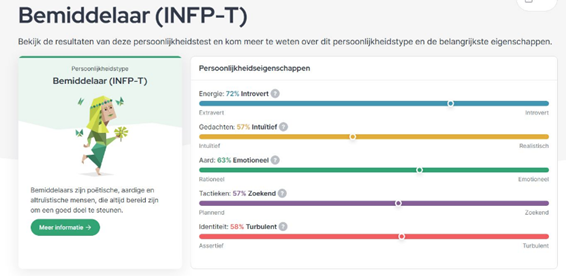
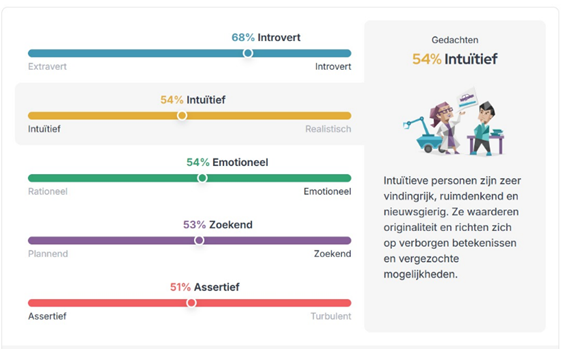
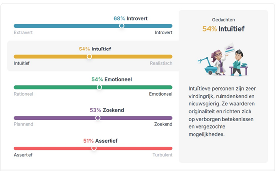
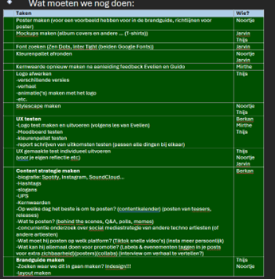
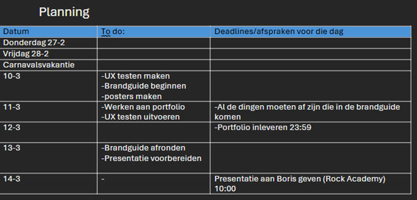
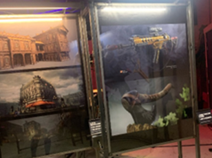
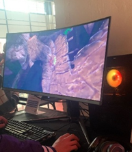
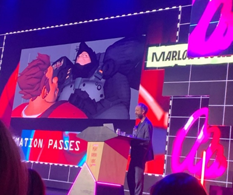

Persoonlijkheidstest
Tijdens een workshop heb ik een persoonlijkheidstest gedaan. Dit om een beter beeld te krijgen. Ook was het heel interessant, want iedereen van ons groepje had een andere. Guido zei hiervan dat hij nu zien waarom onze groep werkt. Hieronder staat de resultaten en een reflectie. Ook moesten we een andere opdracht doen met kernwaarden voor jezelf zoeken.
Tijdens een les gingen we een persoonlijkheidstest doen. Deze test had ik 1-3-2024 ook gedaan. De resultaten zagen er toen zo uit:
De resultaten van de test van de les ziet er zo uit:
 

Tijdens een workshop hebben we een persoonlijkheidstest gedaan om onszelf en onze groepsdynamiek beter te leren kennen. Het was interessant om te zien dat ieder groepslid een ander type had. Guido gaf aan dat hij daardoor begreep waarom onze groep goed samenwerkt. Ik had deze test eerder gedaan op 1 maart 2024, en opnieuw tijdens de les. De resultaten waren grotendeels gelijk, met enkele kleine verschillen:
- Ik ben minder introvert geworden. Sinds ik in Eindhoven woon (ongeveer zeven maanden), ben ik socialer geworden en voel ik me zekerder in gezelschap, bijvoorbeeld binnen mijn volleybalteam.
- Ik ben volgens de test minder intuïtief geworden, maar dat herken ik niet. Ik let nu juist meer op bewijs en feiten, mede dankzij tools zoals ChatGPT.
- Mijn emotionele score is ongeveer gelijk gebleven. Ik voel me wel rationeler en probeer situaties vanuit meerdere perspectieven te bekijken.
- Ik plan nog steeds niet veel, maar doe dat wel steeds vaker. Die verandering zie ik terug in de test.
- De overgang van turbulent naar assertief herken ik ook. Ik voel me zekerder, wat ook samenhangt met het minder introvert zijn.
kernwaarden
Naast de persoonlijkheidstest hebben we ook kernwaarde gezocht voor jezelf Wat ik denk dat mijn kernwaarden zijn:
- Calm (ik ben vaak rustig)
- Goodness (ik probeer me zo goed mogelijk te gedragen)
- Improvement (ik probeer altijd mezelf te verbeteren. Wel blij zijn met wat ik nu goed doe, maar altijd reflecteer naar wat ik beter kan doen en hoe ik mezelf dan kan verbeteren)
- Reflective
- Kindness( ik probeer altijd lief te zijn en als iemand hulp nodig heeft help ik graag)
- Understanding (Ik probeer altijd mensen te begrijpen en in hun schoenen te staan hoe ze op iets zijn gekomen of waarom ze iets hebben gedaan)
Wat Noortje en Jarvin vinden:
- Zorgvuldigheid: ik werk nauwkeurig en let op details.
- Eerlijkheid: ik ben eerlijk en zeg wat ik denk, op een respectvolle manier.
- Zorgzaamheid: ik zorg graag voor anderen.
- Hard work: ik werk hard aan school en opdrachten.
Hieruit heb ik een samenvatting van drie woorden gemaakt die ik denk dat het beste bij mijn passen
- Zorgvuldigheid = Ik ben nauwkeurig in mijn werk. Ik probeer het in mijn oog wel zo goed mogelijk en nauwkeurig te maken
- Verbetering (reflecterend) = Ik probeer altijd mezelf te verbeteren. Wel blij zijn met wat ik nu goed doe, maar altijd reflecteer naar wat ik beter kan doen en hoe ik mezelf dan kan verbeteren
- Goedheid (zorgzaam, vriendelijkheid, eerlijk) = Dit woord is een samenvatting van wat ik wil bereiken, namelijk zorgzaam, vriendelijk en zo eerlijk mogelijk zijn
Kernwaarden Boris
Voor Boris hebben we tijdens de les in een brand canvas drie kernwaarden geformuleerd. Eerst kwamen we op: verbeeldingskracht, verbondenheid en innovatief. Tijdens feedback bleek dat deze kernwaarden te veel op elkaar leken en te oppervlakkig waren. We kregen het advies om ze dieper te onderbouwen.
Na overleg met het team en op basis van een voorbeeldlijst van een derdejaars student, kozen we voor:
- Uniqueness: Boris’ muziek heeft een herkenbare en unieke stijl
- Peace: Zijn muziek straalt rust uit
- Exploration: Zijn muziek is als een ontdekkingsreis naar het onbekende
Na feedback van Anke en Frank merkten we op dat deze kernwaarden vooral onze interpretatie waren. Daarom vroegen we ook feedback aan Boris. Hij gaf aan dat hij tegenwoordig meer experimenteert met energieke muziek, waardoor ‘peace’ minder passend is. We hebben die kernwaarde vervangen door:
- Energie: Zijn muziek brengt kracht, ritme en beweging over.
Planning en Trello
In mijn groepje waren we in de tweede week het overzicht kwijt wat we allemaal moesten doen en wat we gedaan hebben. Dit was vooral verwarrend voor Noortje aangezien die vaak ziek was. Ik heb hierop een planning gemaakt in Word. Ik heb ook geprobeerd deadlines te plannen. Eerst gebruikte we Trello, maar dit werd een beetje in de steek gelaten. Hierover heb ik ook een reflectie geschreven.
 Reflectie waarom we geen Trello gebruiken
Tijdens dit project vond ik het lastig om Trello goed te gebruiken. In eerdere projecten werkten we met Jira, wat toen goed ging, maar later minder goed werd bijgehouden. In dit project vonden we het lastig om taken goed te definiëren, zeker omdat het project in het begin vaag was en er steeds nieuwe taken bijkwamen. Bovendien werkten we allemaal aan dezelfde onderdelen, zoals interviews, waardoor het lastig was om onderscheid te maken in Trello. Daarom heb ik een takenlijst in Word gemaakt, inclusief een soort agenda. Dit hielp om overzicht te krijgen. Deadlines inschatten vond ik lastig, omdat ik niet wist hoe lang taken zouden duren. Voor een volgend project lijkt het me nuttig om beide systemen te combineren: een duidelijke takenlijst in Word en Trello of Jira voor het teamoverzicht.
Playground film fest reflectie
Tijdens het event heb ik veel interessante dingen gezien, vooral de 3D-art trok mijn aandacht. Ik vond het inspirerend en het lijkt me leuk om dit zelf te maken. Ik zag ook een 3D-game die me erg aansprak.
 Samen met Jarvin woonde ik een "Artist Talk" bij van Marlon Nowe, een animator die werkte aan films als Frozen, Rapunzel en Wreck-It Ralph. Ik vond het indrukwekkend hoeveel projecten hij heeft gedaan. Wat me het meest raakte, was zijn uitspraak dat iedereen dit zou kunnen bereiken. Hij vertelde dat hij tijdens zijn studie geen uitblinker was, maar eerder gemiddeld presteerde. Daarin herkende ik mezelf. Zijn verhaal gaf me motivatie. Ik heb vaak gedacht dat ik niet goed genoeg was als designer, maar zijn ervaring laat zien dat het ook draait om doorzetten en passie. Deze lezing zal ik onthouden als ik twijfels heb over mijn ontwerpkwaliteiten.
